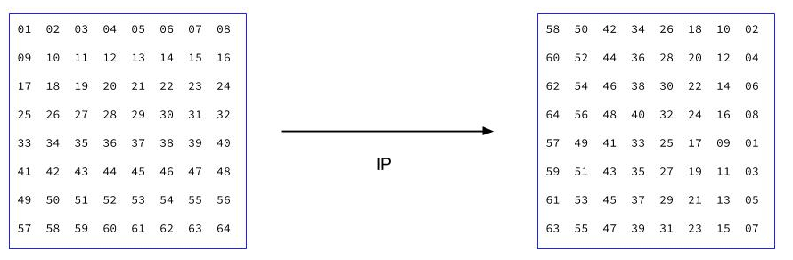
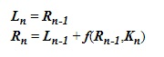

As technology developed the government began to communiate and store data digitally. They began to realize they needed a way to protect the digital data they were accumulating.
In 1973 the National Bureau of Standards (NBS) sent out a call for proposals for cryptographic algorithims to protect government data.
The company IBM had been researching encryption algorithims thelselves, and submitted an algorithim they called Lucifer. Lucifer was one of the first block ciphers.
Vignere and Caesar are substitution ciphers, substituting charcaters in the alphabet for other characters in the alphabet. There were different versions of Lucifer, but in all of them the text was converted into a binary string.
The binary was then divided into blocks, block size was 48-128bits depending on the version.Each of these blocks was divided into a left and right block and encrypted seperately, before being added back together and encryption woudl repeat. IBM and the NBS worked to develop this into a more secure algorithim called DES, the Data Encryption Standard. Here is a diagram of how DES works: DES is more complex then anything else we've talked about, so we're going to split it into sections.
Getting The Key
It starts the same was as Lucifer, the text is converted into binary and split into 64 bit blocks. The blocks are split into a left and right side of 32 bits. DES also uses a 64 bit binary key. The key's binary bits are shuffled in a type of substituition using a permutation table:

In this example, the 58th bit of the key would move to the spot the first bit was in, etc..
The difference between this table and one used in DES is that in DES every 8th bit is ignored, so there would only be 56 numbers on the permutation table. They key is split into left and right halves. Each of these halves are then turned into 16 new sub keys. They key gets recombined using a permutation table and you end up with 16 extremely scrambled sub keys.
Encoding The Message
Remember that the message is divided into 64 bit blocks. Each block goes through an initial permutation. Then the block is divided into a left and right half of 32 bits. The following is then repeated for 16 iterations of n, using the 16 sub keys calculated earlier. The + sign in the formula below stands for Xor! Xor is incredibly important to modern encryption. The f stands for a function which also involves some Xor and permutations. We are not going to get into how function f works, but it makes the message even harder to decrypt.

The final 16 binary strings are the encoded message. They can be converted into hex and then back into characters. To decrypt you reverse the encryption, including the order the subkeys are applied with.
Click to move on!
Click to go back!